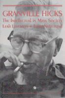

<body bgcolor="#FFFFFF" text="#000000" link="#0000FF" vlink="#CC0000" alink="#CC0000"><center><hr width="350" size="1" align="center" noshade>A biography of one of America's foremost Marxist literary critics<hr width="350" size="1" align="center" noshade><p><a href="https://cdcshoppingcart.uchicago.edu/Cart/ChicagoBook.aspx?ISBN=9781566391047&&PRESS=temple" target="_top">Buy this book!</a> | <a href="https://cdcshoppingcart.uchicago.edu/Cart/Cart.aspx?PRESS=temple" target="_top">View Cart</a> | <a href="https://cdcshoppingcart.uchicago.edu/Cart/Cart.aspx?PRESS=temple" target="_top">Check Out</a></p><p></p></center><!--none//--><h1>Granville Hicks</h1>
<H2>The Intellectual in Mass Society</H2>
<h3>Leah Levenson and Jerry Natterstad</h3>
<P>cloth 1-56639-104-0 $54.50, Nov 93, <FONT COLOR=#990033>Out of Stock Unavailable</FONT>
<BR> 336 pp
6x9
18&nbsp;halftones
</P><BLOCKQUOTE><I>"Levenson and Natterstad's painstaking research yields a wealth of details concerning Hicks's activities as a writer and political activist."</I>
<br>&#151<b><I>Publishers Weekly</I></b><I></I></BLOCKQUOTE>
<p>Set against the turbulent decades of the 1930s, '40s, and '50s, this absorbing biography of the much-neglected intellectual Granville Hicks unfolds in the age of rising fascism, the Great Depression, leftist politics, World War II, the Cold War, McCarthyism, and American anti-intellectualism.
<p>Born in 1901 in Exeter, New Hampshire, Hicks was greatly influenced by the New England tradition of moral consciousness and political idealism. The authors trace his career as a journalist for <I>The New Masses</I>, his tumultuous relationship with communism, his struggle with the request to name names before the House Un-American Activities Committee, and his return to small-town life.
<p>Hick's remarkable writing career with <I>The New Leader</I> and the <I>Saturday Review</I> are closely studied, along with his pioneering works on American and British literature. The biography places this giant of modern literature and criticism among the remarkable generation of writers that included Edmund Wilson, Malcolm Cowley, John Steinbeck, and Alfred Kazin, and marks his influence on the early career of Flannery O'Connor, Bernard Malamud, and others.
<BR>&nbsp;<h2>Contents</h2><P>
<p>Illustrations
<br>Preface
<br>1. A New England Childhood
<br>2. Seeds of Discontent
<br>3. On the Liberal Left
<br>4. A Radical At RPI
<br>5. As Marxist Critic
<br>6. Portrait of a Revolutionary
<br>7. Off the Main Road
<br>8. Raising the Party Banner
<br>9. On Behalf of the CP
<br>10. A Red in Adams House
<br>11. A Shattered Dream
<br>12. Political Soundings
<br>13. Discovering the Common Man
<br>14. An End and A Beginning
<br>15. New Literary Horizons
<br>16. From Canwell to McCarthy
<br>17. The Old House Office Building
<br>18. Bearing Witness
<br>19. Through a Glass Darkly
<br>20. Meeting the SR Deadline
<br>21. Literary Friendships
<br>22. At the Mansion in Saratoga Springs
<br>23. The Final Years
<br>Notes
<br>Selected Bibliography
<br>Index
</P><BR>&nbsp;<H2>About the Author(s)</H2>
<P><b>Leah Levenson</b> is an independent scholar residing in Worchester, Massachusetts.</P>
<P><b>Jerry Natterstad</b> is Professor of English at Framingham State College. They are the co-authors of <I>Hanna Sheehy-Skeffington: Irish Feminist</I>.</P>
<BR><H2>Subject Categories</H2>
<p><A HREF="/tempress/history.html" TARGET="_top">History</a>
<BR><A HREF="/tempress/biography.html" TARGET="_top">Biography/Memoir/Autobiography</a>
</p>
<BR><h2 class="inpageheading">In the series</H2>
<P><I><a href="http://www.temple.edu/tempress/critical.html" onMouseOver="window.status='Click for other books in this series!'; return true;" onMouseOut="window.status=''; return true;" target="_top">Critical Perspectives on the Past</a></i>, edited by <a href="http://www.temple.edu/tempress/authors/benson_memoriam.html" target="_top">Susan Porter Benson</a>, Stephen Brier, and Roy Rosenzweig.
</p><p><i>Critical Perspectives on the Past</i>, edited by Susan Porter Benson, Stephen Brier, and Roy Rosenzweig, is concerned with the traditional and nontraditional ways in which historical ideas are formed. In its attentiveness to issues of race, class, and gender and to the role of human agency in shaping events, the series is as critical of traditional historical method as content. Emphasizing that history is itself an interpretation of material events, the series demonstrates that the historian's choices of subject, narrative technique, and documentation are politically as well as intellectually constructed.</p>
<p align="center"><a href="https://cdcshoppingcart.uchicago.edu/Cart/ChicagoBook.aspx?ISBN=9781566391047&&PRESS=temple" target="_top">Buy this book!</a> | <a href="https://cdcshoppingcart.uchicago.edu/Cart/Cart.aspx?PRESS=temple" target="_top">View Cart</a> | <a href="https://cdcshoppingcart.uchicago.edu/Cart/Cart.aspx?PRESS=temple" target="_top">Check Out</a></p><p><font face="Arial" size="1"><a href="copyright.html" onMouseOver="window.status='Web Copyright Policy';return true;" onMouseOut="window.status=''" title="Web Copyright Policy">&copy;</a> 2015 <a href="http://www.temple.edu" target="new" onMouseOver="window.status='Link to Temple University home page';return true;" onMouseOut="window.status=''" title="Link to Temple University home page">Temple University</a>. All Rights Reserved. http://www.temple.edu/tempress/titles/967_reg.html</font></p>